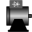

IconsIcons for electrical machines |
|
Package Contents
|
Generic icon of an electric machine |
|
|  |
Generic icon of an electric drive |
|
QuasiStaticFundamentalWaveMachine Icon of quasi-static fundamental wave machine |
Information
This information is part of the Modelica Standard Library maintained by the Modelica Association.
This package contains definitions for the graphical layout of machines. The icons can be utilized by inheriting them in the desired class using "extends" or by directly copying the "icon" layer.